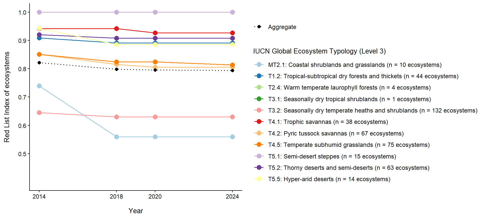

Red List Index of ecosystems assessments
Summary Findings
Background
South Africa is among the first countries to implement the Red List Index of Ecosystems (Monyeki & Skowno, 2025), a standardized indicator that tracks temporal trends in ecosystem condition and threat levels. This index builds on ecosystem threat status assessments conducted using the IUCN Red List of Ecosystems framework, enabling consistent and repeatable monitoring of ecosystem deterioration over time. Ecosystem threat status is the globally recognized Red List of Ecosystems headline indicator that measures the extent to which ecosystems are losing vital aspects of their structure, function, or composition, or conversely, the degree to which they remain intact.
To date, national trends have been assessed only for terrestrial ecosystems, with plans to expand the assessment scope in the near future to include ecosystems other realms (i.e., freshwater, estuarine, marine). In parallel with the RLIe application, South Africa has made substantial progress in crosswalking its national ecosystem classification across all realms to the IUCN Global Ecosystem Typology (Dayaram et al., 2021). The IUCN Global Ecosystem Typology is a global, hierarchical classification system designed to consistently describe ecosystems, thereby enabling comparability of ecosystem assessments across regions, realms, and spatial scales (Keith et al., 2020).
Many of South Africa’s ecosystems are nested within higher-level functional units of the IUCN GET, specifically Level 2 (functional biomes) and Level 3 (ecosystem functional groups). These levels were used as the primary analytical and reporting units to ensure a consistent application of the RLIe indicator across terrestrial ecosystems. In total, South Africa’s 463 terrestrial ecosystem types were matched to five IUCN GET Level 2 functional biomes, while the crosswalk to GET Level 3 resulted in 11 ecosystem functional groups.
The Red List Index of Ecosystems (RLIe) was calculated at both IUCN Global Ecosystem Typology (GET) Level 2 and Level 3 across four assessment periods (2014, 2018, 2022, and 2024). The index scores ranges between 0 and 1, where a value of 0 indicates that all ecosystems within a given functional biome or ecosystem functional group have collapsed, and a value of 1 indicates that all ecosystems within the functional biome or ecosystem functional group are classified as Least Concern. More importantly, an RLIe value of 1 does not imply the absence of threats; rather, it indicates that the cumulative impacts of ongoing pressures have not yet reached the thresholds required to trigger threat categories under the IUCN Red List of Ecosystems criteria.
Global Ecosystem Typology at Level 2
The IUCN Global Ecosystem Typology (GET) Level 2 functional biomes reveal patterns broadly consistent with national biome level trends reported in the (NBA 2025). Across the five functional biomes assessed, resilience trajectories vary considerably, reflecting differential vulnerability to environmental pressures.
T2: Temperate–boreal forests and woodlands stands apart as the only biome maintaining consistently high resilience, with an RLIe score of 1.0 across all four assessment periods. All four ecosystems within this functional biome remained classified as Least Concern throughout the assessment timeframe, indicating no detectable deterioration. Importantly, this stability does not signify an absence of pressures, rather, it indicates that existing threats have not yet intensified to thresholds sufficient to trigger higher threat categories.
By comparison, T5: Deserts and semi-deserts and T1: Tropical–subtropical forests show modest but measurable RLIe declines. These decreases reflect gradual escalation of ecosystem risk rather than abrupt shifts into higher threat categories, suggesting a pattern of incremental degradation that warrants continued monitoring.
Most concerning is MT2: Supralittoral coastal systems, which exhibits the steepest RLIe decline among all functional biomes assessed. This pronounced trajectory indicates not only comparatively higher baseline vulnerability but also accelerating risk over the assessment period, positioning coastal interface ecosystems as a priority for targeted conservation intervention.
Global Ecosystem Typology at Level 3

At IUCN GET Level 3, ecosystem functional groups exhibit diverse resilience trajectories that reveal both encouraging stability and emerging vulnerabilities across the assessment period. Three of the eleven functional groups (T2.4 Warm temperate laurophyll forests, T3.1 Seasonally dry tropical shrublands, and T5.1 Semi-desert steppes) maintained an RLIe score of 1.0 across all assessment periods, indicating minimal detectable impacts from anthropogenic land-use pressures. This stability suggests either effective protection or lower baseline exposure to drivers of change.
Declining ecosystems followed distinct temporal patterns and this is demonstrated through MT2.1 Coastal shrublands and grasslands which experienced the most dramatic deterioration, with RLIe dropping sharply to 0.6 between 2014 and 2018 before stabilizing at this reduced level. Conversely, T3.2 Seasonally dry temperate heaths and shrublands had already declined prior to 2014 and maintained this degraded state (RLIe = 0.6) throughout subsequent assessment periodss, suggesting persistent rather than accelerating pressures.
Aggregated trends confirm a broader erosion of ecosystem resilience. The overall RLIe across all functional groups declined from 0.82 in 2014 to 0.79 in 2024, signaling a gradual but consistent increase in ecosystem threat levels nationally. These contrasting trajectories underscore a critical management imperative: ecosystem resilience cannot be addressed through uniform interventions. Instead, conservation strategies must be tailored to the specific drivers and temporal dynamics shaping risk within each functional group, with particular attention to coastal systems experiencing acute, ongoing deterioration.
Red List of Ecosystem at the Global Ecosystem Typology by realm

Here, we examine the responses of South Africa’s ecosystems aggregated at IUCN Global Ecosystem Typology (GET) Level 2 to multiple, often synergistic pressures, as reflected by their threat status. Figure 3 shows that Aquatic and transitional ecosystems are more threatened than other functional biomes. In particular, Lakes (F2) and semi-confined transitional waters (FM1) each comprising 22 ecosystem types exhibit the highest threat levels, with 91% of ecosystems classified as either Critically Endangered, Endangered or Vulnerable. While both of these functional biomes show equivalent threat proportions, lake ecosystems have the highest proportion of ecosystems that are on a verge of collapse (i.e. Critically Endangered). Additionally, rivers and streams (F1) and palustrine wetlands (TF1) demonstrate high vulnerability to drivers of change, with over 60% of their ecosystems classified as threatened. The vulnerability of these aquatic and transitional systems experience arises from cumulative pressures including pollution from multiple sources, land-use change, biological invasions, and climate change. Their ecological functioning is particularly sensitive to hydrological alterations and water quality degradation.
Terrestrial and deep marine ecosystems show greater resilience compared to ecosystems in other functional biomes. specifically, temperate-boreal forests and woodlands (T2), deserts and semi-deserts (T5), and deep sea floors (M3) exhibit substantially lower threat levels at 0%, 11%, and 10% respectively. Despite very low proportions of ecosystems classified as threatened, drivers of change for terrestrial ecosystems are primarily anthropogenic, driven by habitat loss from intensive land use activities (agriculture, urban development, infrastructure, mining, commercial forestry, and dam construction), invasive alien species, rangeland degradation, pollution, unsustainable resource extraction, and climate change. Marine ecosystems face distinct pressures dominated by industrial fishing, with additional impacts from mining, petroleum extraction, altered freshwater flows, port and harbour development, shipping activities, and climate change.
These pressures interact and operate in complex ways that result in the alteration of ecosystem structure, function and composition, and the disruption of ecological processes. An improved and up to date finer-scale ecosystem pressure maps are essential in improving ecosystem-focused assessments which are the corner-stone for supporting evidence-based conservation planning and effective ecosystem management.